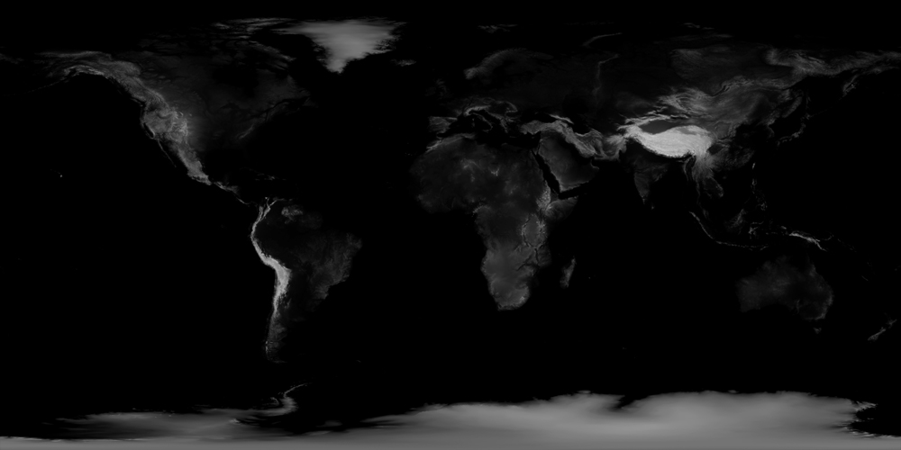
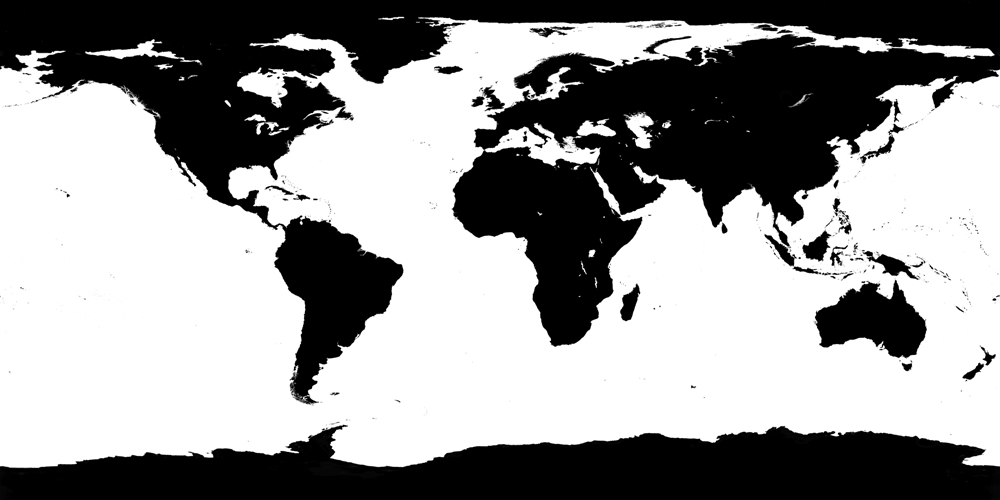
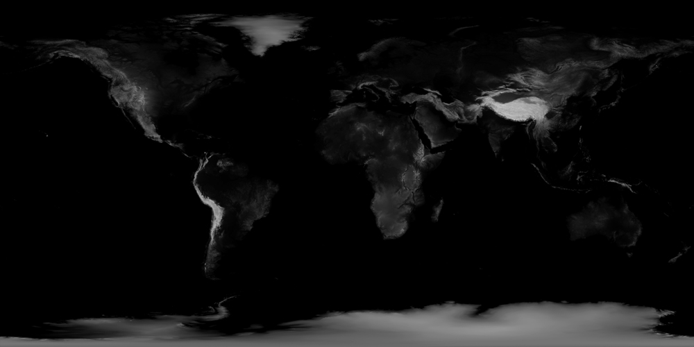
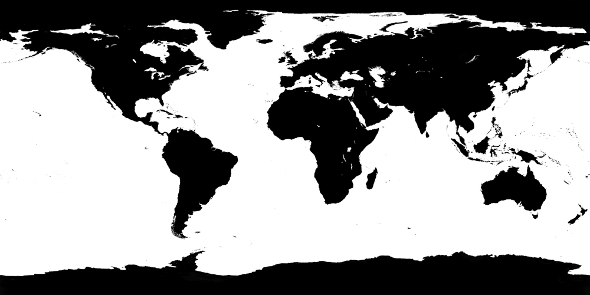

各浏览器运行情况如下，我也就这几个平台的浏览器可以试。就目前来说，WebGL仍然是实验阶段。
第一个例子根据Three.js的官网制作。详见博文：Hello, WebGL。
做这个例子，最初是参考《JavaScript编程实战》。
不过，做的过程中，找到了一篇更为深入的博文：How to Make the Earth in WebGL?。这哥们也是用Octopress写博客，专门研究Three.js，很牛逼。
外形来自three.js自带的例子。结果也就这样。他们使用的是3.1版本的JSON Format，我把它改成了version4进行调用。可是我一直没能搞懂如何自己写一个version 4的json文件。这篇文章里有 three.js JSON数据格式的参数说明：基于THREE JS的 JSON 模型格式 理解，以后研究的时候参考。感觉各种贴图之类的，已经不是代码的范畴而是3D模型设计的范畴了。
 


